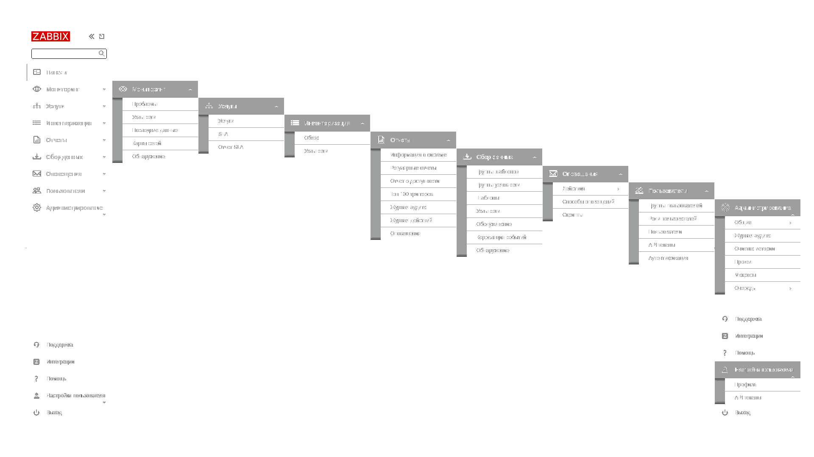

Zabbix — это программное обеспечение для мониторинга многочисленных параметров сети, а также состояния и работоспособности серверов. Почему я выбрал именно Zabbix? 1 - Система обеспечивает автоматическое обнаружение серверов и сетевых устройств. 2 - Zabbix имеет функции низкоуровневого и распределенного мониторинга. 3 - Конфигурирование системы через API, Web-интерфейс, а также хранение настроек в базе данных. 4 - Zabbix предоставляет удобные и гибкие средства визуализации, а также хранение истории, тем самым упрощая мониторинг. 5 - Система поддерживает различные оповещения, пороги, а также мониторинг логов. 6 - Предоставлен довольно большой функционал для конструирования сетевых карт и панелей. В Zabbix реализован следующий заполняемый функционал:
